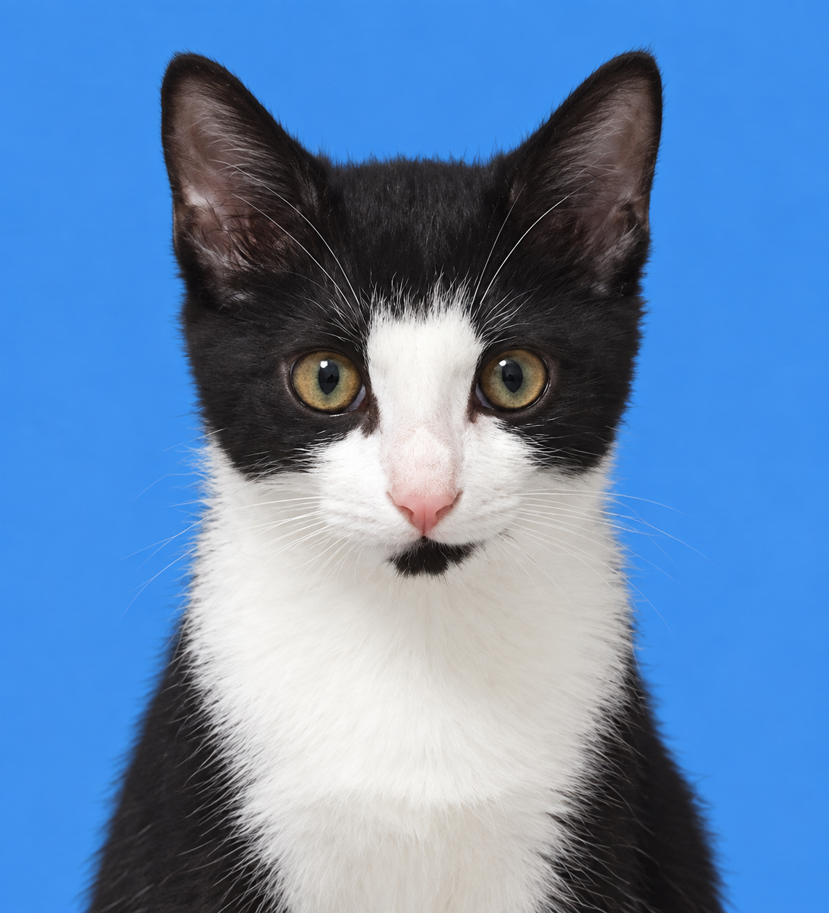
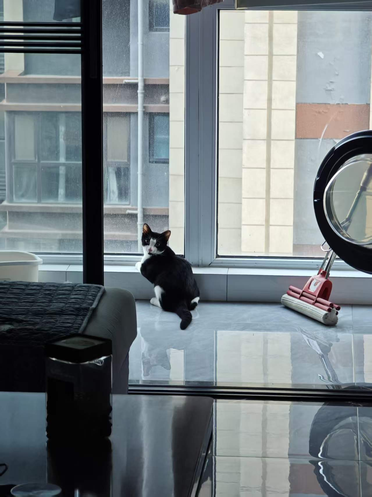
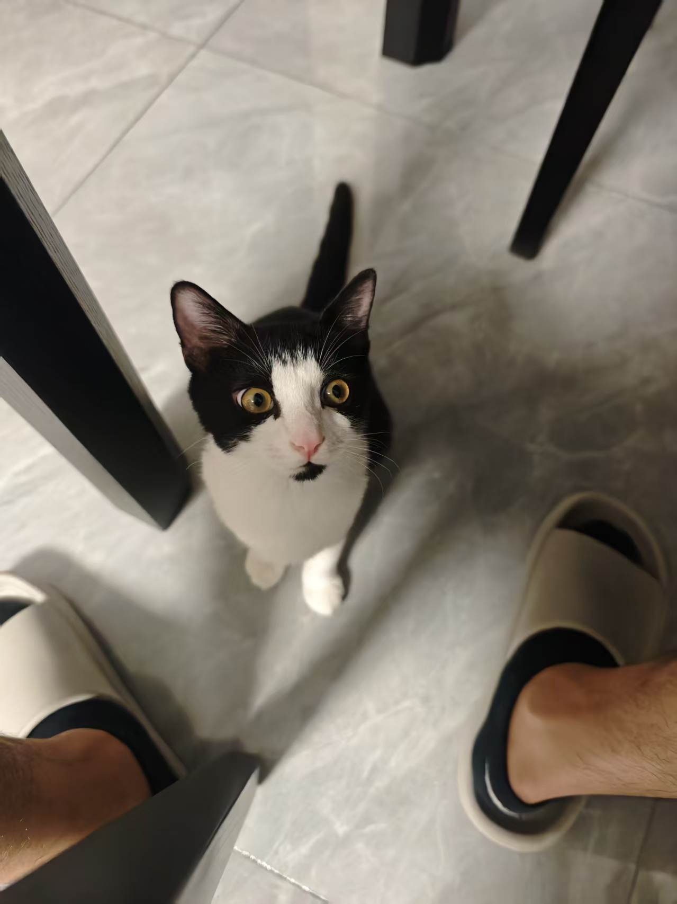
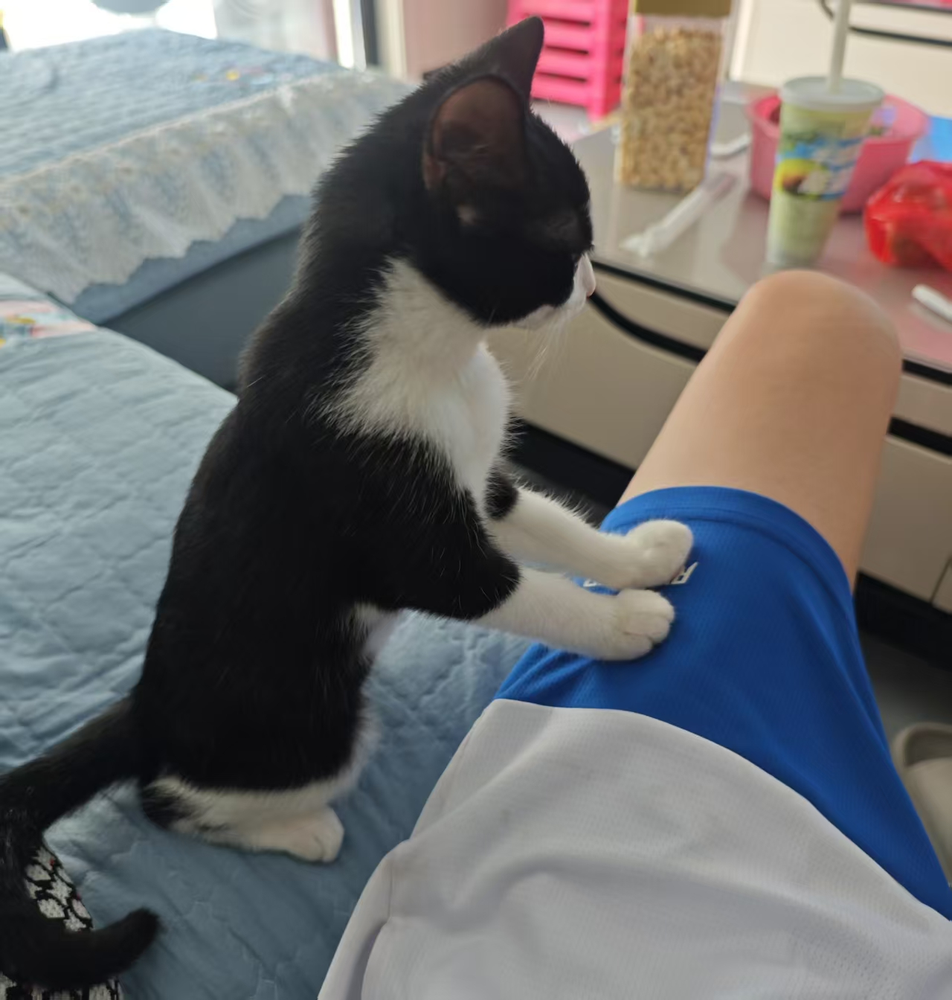

年龄计算中...2026年4月17日出生
YOYO 🐾
我的小猫成长档案
陪你慢慢长大 ♡

YOYO
奶牛猫 · GG ♂
Hi～
我是 YOYO！♥
我是 YOYO！♥
小小的身影
大大的幸福 🐾
大大的幸福 🐾



当前体重-- kg最后更新：--
📈 体重增长趋势
见证每一克的成长 ❤️
❤️健康管理›
🐾 健康、快乐、一直在一起 ～ ♡
猫砂更换
保持 YOYO 的小厕所干净清爽
上次更换暂无最近一次完整更换日期
距离上次更换--自动计算天数
🧹 猫砂更换记录
每次完整更换猫砂后记录一次
YOYO 健康
体温、疫苗与驱虫记录
🌡️ 体温记录
最近：暂无记录
💉 疫苗记录
共 3 条记录
接种日期疫苗针次接种医院
💊 驱虫药使用记录
记录药品、日期和驱虫类型